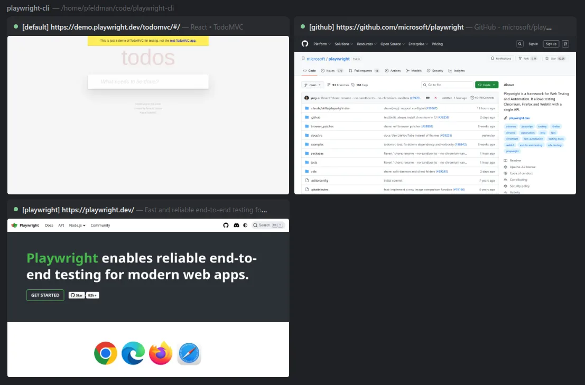

为什么
选择
专为现代编码代理设计，提供最高效的浏览器自动化体验。CLI 调用更节省 token，适合高吞吐量编码代理。
节省 Token
不会强制将页面数据注入 LLM。避免将大型工具模式和冗长的无障碍树加载到模型上下文中，允许代理通过简洁、专用的命令执行操作。
CLI 优先
现代编码代理越来越倾向于将 CLI 工作流作为 SKILL 暴露，而非 MCP。CLI 调用更节省 token，适合需要在有限上下文窗口内平衡浏览器自动化的高吞吐量编码代理。
丰富命令
提供完整的浏览器自动化命令集：导航、交互、快照、存储、网络、开发者工具等，满足所有自动化需求。
会话管理
支持多个浏览器会话，持久化配置文件，cookie 和存储状态在会话内保持不变，支持命名会话管理。
可视化仪表板
使用 playwright-cli show 打开可视化仪表板，实时查看和控制所有正在运行的浏览器会话。
灵活配置
支持 JSON 配置文件和环境变量配置，可自定义浏览器类型、启动选项、上下文选项、超时设置等。
快速
开始
全局安装
使用 npm 全局安装 Playwright CLI
安装 Skills
为 Claude Code、GitHub Copilot 等安装本地 skills
开始使用
让代理自动运行或手动执行命令
系统要求
- Node.js 20 或更新版本
- Claude Code、GitHub Copilot 或任何其他编码代理
如果全局 playwright-cli 命令不可用，请尝试通过 npx playwright cli 使用本地版本（需要 Playwright 1.59 或更新版本）。
命令
参考
提供全面的浏览器自动化命令，覆盖所有使用场景。从核心操作到高级功能，一应俱全。
核心命令
playwright-cli open [url]
打开浏览器，可选择导航到 url
playwright-cli goto <url>
导航到指定 url
playwright-cli click <ref>
在网页上执行点击
playwright-cli type <text>
在可编辑元素中输入文本
playwright-cli snapshot
捕获页面快照以获取元素引用
playwright-cli find <text>
在快照中搜索文本，返回匹配的节点
导航命令
playwright-cli go-back
返回上一页
playwright-cli go-forward
前进到下一页
playwright-cli reload
刷新当前页面
键盘命令
playwright-cli press <key>
按下键盘按键
playwright-cli keydown <key>
按下键盘按键（不释放）
存储命令
playwright-cli state-save
保存存储状态
playwright-cli cookie-list
列出 cookies
playwright-cli localstorage-list
列出 localStorage 条目
playwright-cli sessionstorage-list
列出 sessionStorage 条目
开发者工具
playwright-cli console
列出控制台消息
playwright-cli requests
列出所有网络请求
playwright-cli show
打开可视化仪表板
灵活
配置
支持 JSON 配置文件和环境变量配置，满足各种定制需求。
配置文件
使用 --config 选项指定配置文件，或使用默认配置 .playwright/cli.config.json
环境变量
通过环境变量配置浏览器类型、无头模式、视口大小等，无需修改配置文件。
配置示例
config.json{
"browser": {
"browserName": "chromium",
"headless": false,
"launchOptions": {
"slowMo": 100
},
"contextOptions": {
"viewport": {
"width": 1280,
"height": 720
}
}
},
"outputDir": "./output",
"console": {
"level": "info"
},
"timeouts": {
"action": 5000,
"navigation": 60000
}
}常用环境变量
PLAYWRIGHT_MCP_BROWSER
浏览器类型
PLAYWRIGHT_MCP_HEADLESS
无头模式
PLAYWRIGHT_MCP_VIEWPORT_SIZE
视口大小
PLAYWRIGHT_MCP_TIMEOUT_ACTION
操作超时
实际演示
看看 Playwright CLI 如何在实际场景中工作
测试 Todo 应用
使用 Playwright CLI 测试待办事项应用的添加功能
会话管理
管理多个浏览器会话，实现持久化配置
会话管理命令
playwright-cli list- 列出所有会话playwright-cli close-all- 关闭所有浏览器playwright-cli kill-all- 强制终止所有进程
可视化仪表板
使用 playwright-cli show 打开可视化仪表板，实时查看和控制所有正在运行的浏览器会话

会话网格
显示按工作区分组的所有活跃会话，每个会话都有实时截屏预览、会话名称、当前 URL 和页面标题
会话详情
显示所选会话的实时视图，包含标签栏、导航控制（后退、前进、刷新、地址栏）和完整远程控制
远程控制
点击视口可接管鼠标和键盘输入；按 Escape 释放。可在网格中关闭正在运行的会话或删除不活跃会话的数据